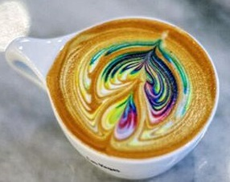

Франківськ – це передовсім місто-прогулянка. Найбільшою цінністю тут є історична атмосфера центрально-європейського провінційного міста, а не суцільні квартали давньої забудови чи
визначні пам'ятки архітектури. Усі давні мандрівники у подорожніх нотатках згадували про велику кількість садів та квітників у цьому місті. Впродовж останніх двох століть міська влада особливо дбала про озеленення вулиць та закладання
парків і скверів, якими милуємося й досі. До півгодини легкої ходи від ратуші – і ви вже у розкішному парку Шевченка, а щоб відпочити на лавочці у сквері, взагалі нікуди ходити не треба – вони тут повсюдно.
 У Франківську можна почувати себе майже як на острові, адже місто огинають дві ріки. А Карпатські гори та величезний Чорний ліс так близько, що за доброї погоди верхівки гір видно ледь не з кожного
балкону. Незважаючи на те, що місто є дуже динамічним, міське життя, на перший погляд, виглядає так, що усі тут тільки те й роблять, що відпочивають, прогулюються та цілими днями сидять у кав'ярнях та десятках вуличних кафе. За 100 років
у цьому місті-курорті так нічого й не змінилося! Сліди давньої Речі Посполитої та Австрійської імперії знайдете не лише в архітектурі та плануванні міста, але й побутових звичках, мові та ментальності франківчан. Впродовж кількох століть
тут жили разом українці, поляки, євреї, вірмени, німці, чехи та росіяни
У Франківську можна почувати себе майже як на острові, адже місто огинають дві ріки. А Карпатські гори та величезний Чорний ліс так близько, що за доброї погоди верхівки гір видно ледь не з кожного
балкону. Незважаючи на те, що місто є дуже динамічним, міське життя, на перший погляд, виглядає так, що усі тут тільки те й роблять, що відпочивають, прогулюються та цілими днями сидять у кав'ярнях та десятках вуличних кафе. За 100 років
у цьому місті-курорті так нічого й не змінилося! Сліди давньої Речі Посполитої та Австрійської імперії знайдете не лише в архітектурі та плануванні міста, але й побутових звичках, мові та ментальності франківчан. Впродовж кількох століть
тут жили разом українці, поляки, євреї, вірмени, німці, чехи та росіяни
У цьому місті, створеному для відпочинку, відкривається все більше оригінальних кав'ярень, стильних барів, ресторанів та закладів традиційної української, а також регіональної — галицької кухні.
Адже, будучи частиною великої України, Франківськ є цілком унікальною територією. Це насамперед місто Галичини, яка впродовж багатьох століть належала до іншої цивілізації, ніж решта України.Місто невелике, але тут можна затриматися надовго,
милуючись сентиментальними фрагментами європейської архітектури, оглядаючи багату колекцію сакрального живопису художнього музею чи занурюючись у атмосферу мистецьких галерей та чисельних сувенірних крамничок, де продаються унікальні вироби
народних майстрів.
Ірма Вітовська
Ірма Григорівна Вітовська — українська актриса театру та кіно; працює у Молодому театрі (з 1998), відома за роллю Лесі у серіалі «Леся+Рома» (2005—2007). Народилася 30 грудня 1974 у Івано-Франківську. В 1998 році закінчила Львівський державний музичний
інститут за спеціальністю «Актриса драматичного театру», курс Богдана Козака. З того ж року працює у Молодому театрі, де грає і посьогодні (станом на 1 січня 2010 року). Ірма Вітовська неодноразово була учасницею багатьох міжнародних театральних фестивалів.
Отримувала персональні нагороди.
Була задіяна у виставах: «Русалонька» (Русалонька), «Жінки і війна» (Рахмана), «РЕхуВІлійЗОР» (Марія Антонівна), «Севільські заручини» (Клара), «Трагедія Гамлета, принца Данського» (Акторка), «Хоровод любові» (Гризетка), «Одруження» (Дуняша), «Маринований
аристократ» (Дружина), «Московіада» (Галя) та ін. Брала участь у благочинному проекті-виставі «Допомогти так легко, або Звідки беруться діти?» (разом з Адою Роговцевою, Машою Єфросиніною, Дашою Малаховою, Володимиром Горянським та Наталею Долею).
Андрухович Юрій Ігорович
український поет, прозаїк, перекладач, есеїст. Живе і працює в Івано-Франківську. 1985 разом з Віктором Небораком та Олександром Ірванцем заснував поетичну групу Бу-Ба-Бу, яка одною з перших почала відновлювати в українській літературі карнавальні
та буфонадні традиції, продемонструвала успішний приклад творення соціо-культурного міту. З 1991 Андрухович — співредактор літературно-мистецького журналу «Четвер», співпрацював також із журналом «Перевал», виступивши упорядником двох його номерів.
У часописі «Сучасність» вперше побачили світ найвагоміші прозові твори письменника: «Рекреації» (1992), «Московіада» (1993), «Перверзія» (1996), видані у 1997 році окремими книгами, есей «Центрально-Східна ревізія» («Сучасність», 2000, № 3)..
Присутність Андруховича в Івано-Франківську стала вагомим чинником ферментації так званого «станіславського феномену» та формування місцевої мистецької еліти. Творчість Андруховича має значний вплив на перебіг сьогоднішнього літературного процесу
в Україні, з його іменем пов'язані перші факти неупередженого зацікавлення сучасною українською літературою на Заході. Твори Андруховича перекладені польською, англійською, німецькою, французькою, російською, угорською, фінською, шведською, іспанською,
чеською, словацькою мовами й есперанто...